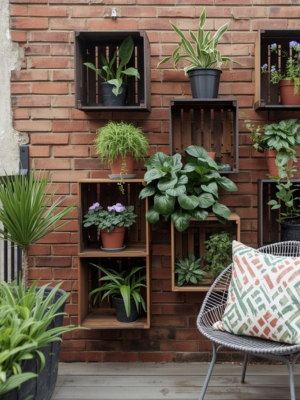
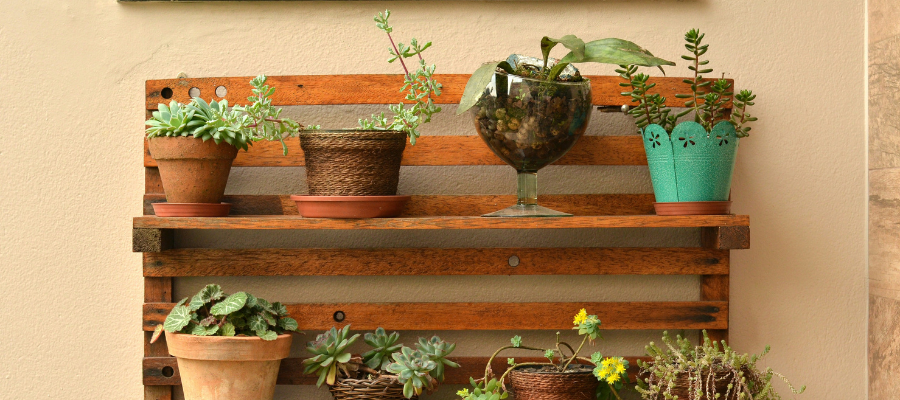
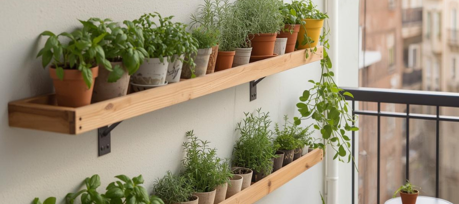
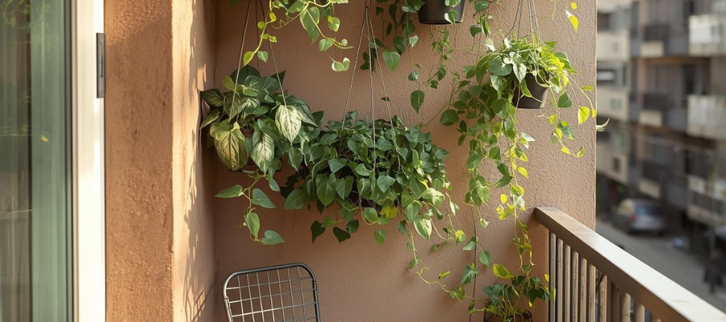
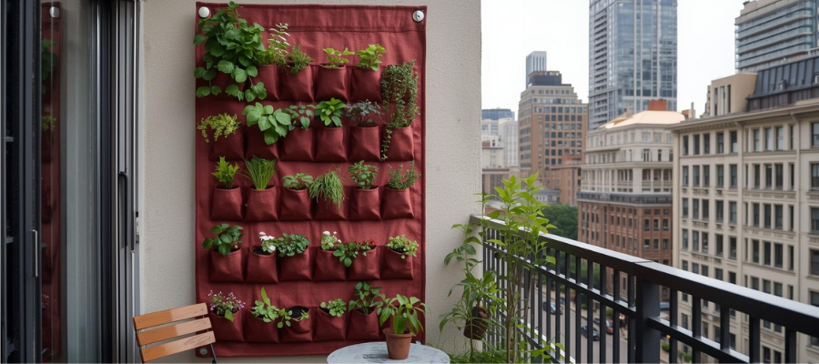
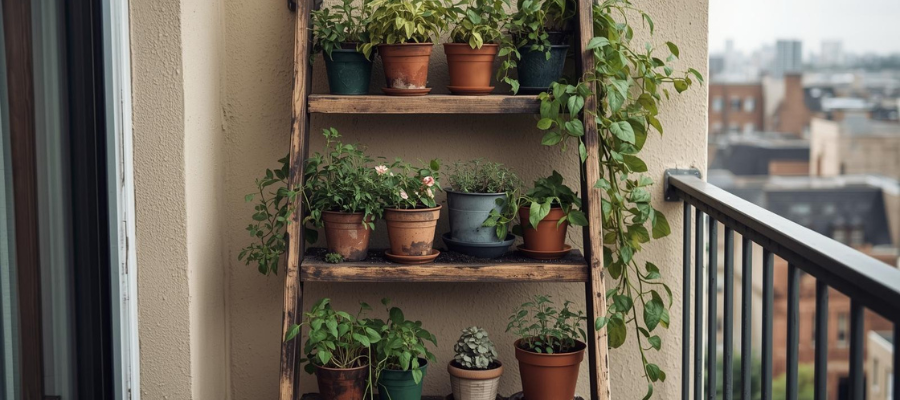
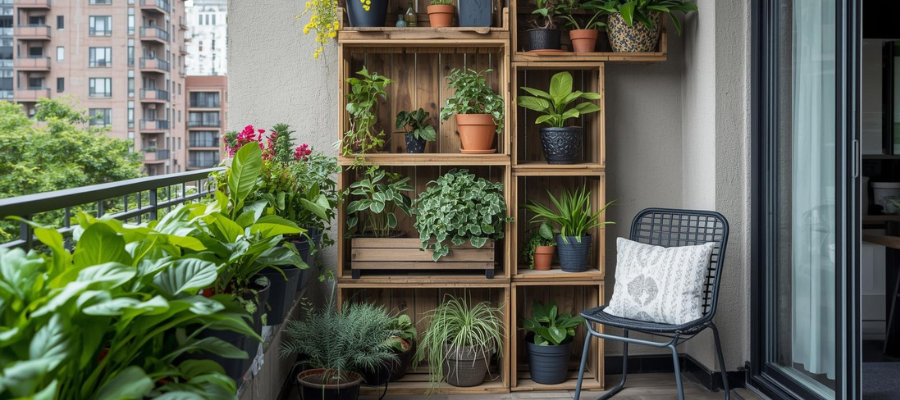
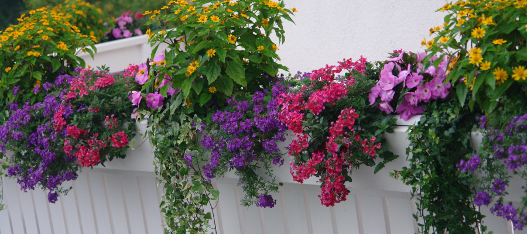
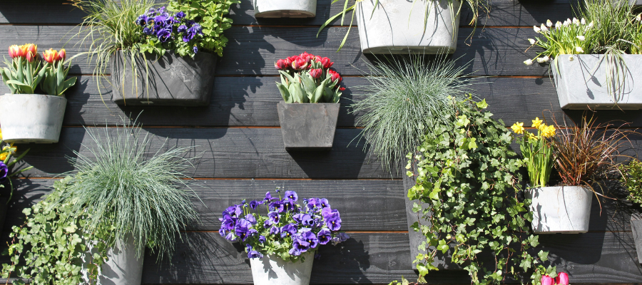

Simple Wall Garden Ideas for Small Balconies
10 March 2026
Small balconies tend to fill up faster than we expect. You start with a few pots on the floor, add a chair to sit with your morning coffee, maybe squeeze in a small table — and before long the space feels full.
That’s where wall gardens quietly come to the rescue.
Instead of using precious floor space, you let your plants grow upward. An empty wall, a railing, or even a small corner can become a soft, green backdrop. It adds life to the balcony and saves space.
Vertical gardens don’t have to be complicated or perfectly designed either. A couple of simple shelves, a few hanging containers, or a small wall planter can be enough to get started, and your balcony still has space left for the things that make it enjoyable — like adding a second chair so you can share that morning coffee with someone.
Why Wall Gardens Work So Well in Small Spaces
Wall gardens have become especially popular in cities because they make use of space that often sits quietly unused. A blank wall, the side of a railing, or a narrow corner suddenly becomes an opportunity for plants to grow and soften the space.
There’s something visually calming about a vertical garden. As plants begin to fill in, they create a soft green backdrop behind the seating area. The space feels a little more private, a little more sheltered from the surrounding buildings and city noise.
For apartment balconies and condo terraces, this approach often works better than trying to squeeze in more and more pots on the ground. A few well-placed plants on a wall can create the feeling of a full garden, without the balcony ever feeling crowded.

Easy Ways to Create a Wall Garden
You don’t need a complicated system to start a wall garden. In fact, the simplest setups often look the most natural. A few thoughtful elements are usually enough to turn an empty wall into a small vertical garden.
Wall shelves

A couple of wooden shelves can easily transform a blank balcony wall into a layered plant display. Small pots of herbs, flowers, or leafy plants sit comfortably on shelves and can be rearranged whenever you feel like refreshing the space. Over time, as plants grow and spill slightly over the edges, the whole setup begins to feel relaxed and lived-in.
You will need:
- 2–3 sturdy wooden shelves
- wall brackets or mounting hardware
- small plant pots (herbs, flowers, leafy plants)
- a drill and wall anchors if mounting to concrete or brick.
Hanging planters

Hanging planters are one of the easiest ways to grow vertically. When attached to hooks or balcony railings, trailing plants can cascade downward naturally, creating soft layers of greenery without taking up any floor space. This works especially well on narrow balconies where every bit of space matters.
You will need:
- wall hooks or railing hangers
- hanging planters or macramé plant holders
- trailing plants such as ivy, pothos, or creeping Jenny.
Pocket planters

Fabric pocket planters are designed specifically for vertical gardening. Each pocket holds a small plant, allowing you to grow several herbs or flowers in a compact wall area. They’re lightweight, easy to hang, and especially useful for growing herbs you want within reach.
You will need:
- a fabric vertical pocket planter
- mounting hooks or screws
- lightweight potting soil
- small plants like basil, parsley, mint, or thyme.
Wooden crates or ladders

If you prefer something a little less permanent, a leaning ladder or stacked wooden crates can create a vertical garden without drilling into the wall. Pots can be placed on each level, and the slightly uneven arrangement often feels relaxed and informal.
You will need:
- a wooden ladder or a few wooden crates
- several plant pots
- herbs, flowers, or trailing plants
- a stable wall or corner to lean the structure against.

Plants That Work Well in Vertical Gardens
Not every plant enjoys growing vertically, but many actually adapt very well to it. The key is choosing plants that stay relatively compact, don’t mind shallow containers, and either grow upright or gently trail downward. When you combine a few different plant shapes, a wall garden starts to feel fuller and more natural.
Here are a few types that tend to do especially well in vertical setups.
Herbs
Herbs are some of the easiest plants to grow in wall gardens. Many of them stay small, grow quickly, and are perfectly happy in smaller containers.
Great options include basil, mint, thyme, parsley, oregano, and chives. Just keep in mind that mint can spread quickly, so it’s usually best to give it its own container.
Trailing plants
Trailing plants are what really bring a vertical garden to life. Instead of growing straight up, they naturally spill over the edge of containers and cascade downward, softening the whole wall.
Plants like ivy, pothos, creeping Jenny, or string-of-hearts create those relaxed layers that make a vertical garden look established and lush.

Compact flowers
Small flowering plants can add color without taking up much space. In a wall garden, they’re great for filling small pockets or containers between herbs and leafy plants.
Flowers such as petunias, alyssum, calibrachoa, or small begonias tend to stay compact while producing lots of blooms during the growing season.
Small leafy greens
If you enjoy growing edible plants, vertical gardens can also work well for small greens. Many salad plants grow quickly and don’t require deep soil.
Lettuce, arugula, spinach, and baby kale are all good candidates. They grow quickly and can be harvested regularly, making the wall garden both decorative and practical.

When arranging plants, try mixing upright plants with trailing ones. Upright herbs or flowers add structure, while trailing plants soften the edges and create movement. Together they make the wall garden feel balanced, relaxed, and naturally full — even when you’re only growing a handful of plants. And if you are planning to move your houseplants outside for the summer, here’s a simple step-by-step guide to help you prepare them.
A Small Garden That Grows Upward
Wall gardens are a simple way to grow more plants without needing more space. The floor fills up quickly, but walls usually just sit there waiting. A vertical garden simply invites it to join the project.
Even a small section can make a big difference. A few pots of herbs, a trailing plant, or a small flowering plant can instantly bring life to a plain wall, turning it from blank to part of the garden itself.
The best part is that vertical gardens evolve naturally. You don’t need a perfect setup from the start. With a shelf, a hanging planter, or a few simple containers, you can begin. Over time, you’ll add a plant here, another there, and slowly, the wall transforms into a living, layered green space. With just a few tools and some care, you can create a little balcony magic that grows and changes with the seasons.